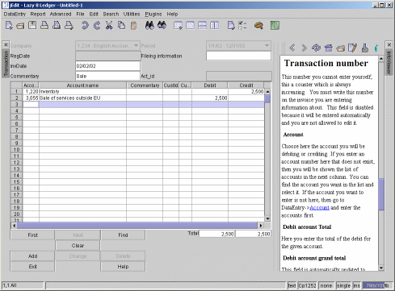

The Lazy8 Ledger Tutorial

Lesson: The transaction entry form
Here is where you will be spending most of your time with data entry.
I will describe first the quick way to enter a record. Then I will go through
each field and what to enter there.

The quick entry
There is a good chance that when you first come to this screen, that the columns are
not all visible. Some of the columns have been moved off the screen to the right. In
order to see all the columns you need to reduce the size of some of the columns. To
expand or reduce the size of a column, put the cursor between any two of the column headers. You
will see the cursor change form. Hold down the left mouse button and drag the header to
either expand or contract the column. When you have all the columns showing as in the
picture above, then continue.
1. Put the cursor at in the InvDate (Inoice date) field. After this point you dont need to
use the mouse again.
2. Enter the date, if you enter the date in the wrong format, you will be told so.
Hit ENTER on your keyboard
3. Now you are in the 'Commentary' field. Enter any comments you want to be attached to this transaction.
Hit ENTER on your keyboard
4. Now you are in the first Account number field.
Enter one of your account numbers and hit ENTER on your keyboard
5. Now you are in the Debit field. Enter a debit amount or hit tab on your keyboard to enter a
credit amount. Hit ENTER on your keyboard.
6. Now you are once again in the Account number field.
Enter one of your account numbers and hit ENTER on your keyboard
7. Now you are in the Debit field. At this point, you can enter a number or just
hit ENTER on your keyboard. If you hit enter, the balancing number will be entered into
either the debit or credit field to balance the transaction.
8. Now you are once again in the Account number field.
If at this point your transaction is balanced, you may hit enter once again. The focus
of the input will be shifted to the 'Add' button at the bottom of the screen. Finally
hit enter once more and the record will be entered. You will get a confirmation dialog
saying the record is entered. Hit enter again and you will come to the point 1 at
the invoice date field.
9. Continue back at number 1 to enter another record
Each Field described
I skipped a large number of fields in the quick entry description. These fields are
optional but can enhance your data by entering information there if you need it.
Company
Normally, you choose the company you want to work with when you first start
Lazy8 Ledger. That company you chose is shown here.
To change this company, you must restart Lazy8 Ledger.
Period
The invoice date must fall between these two periods, otherwise this form will
not accept the given date. To change this date you must restart Lazy8 Ledger.
Registration date
This is the todays date, that is, the date you enter data. This field
is disabled because it will be entered automatically and you are not allowed
to edit it.
Invoice date
This date is the date on the invoice you will be entering data on.
This date you must enter, otherwise the program will assign todays date
to this field. You must enter the date in the proper format or else
leave it blank.
Commentary
This is important extra information that you must enter. This field
shows up in most reports. This is a description of what the invoice
is about, what you bought or what you sold or any other relevant data
Fileing information
This field shows up in very few reports and is used to enter mainly, the
invoice number and perhaps where you will be storing the invoice if that
is relevant infomation.
Customer
This field is entirely optional. It is used in the case you have
invoices that you want linked to a specific customer or project so you can easily
gather statistics on how much business you do with that customer.
If the customer you want to enter is not here, then go to DataEntry->customer
and enter the accounts first
Transaction number
This number you cannot enter yourself, this a counter which is always increasing.
You must write this number on the invoice you are entering information
about. This field is disabled because it will be entered automatically
and you are not allowed to edit it.
Account
Choose here the account you will be debiting or crediting. If you enter an account number
here that does not exist, then you will be shown the list of accounts in the next column. You
can find the account you want in the list and select it. If the account you
want to enter is not here, then go to DataEntry->Account
and enter the accounts first.
Debit account Total
Here you enter the total of the debit for the given account.
Debit account grand total
This field is automatically updated to show you what the total of all your
debits are. This field must equal the corresponding field in the
credit column otherwise the program will not accept your entry.
Credit account total
Here you enter the total of the credit for the given account.
Credit account grand total
This field is automatically updated to show you what the total of all your
credits are. This field must equal the corresponding field in the
debit column otherwise the program will not accept your entry.
Copyright
2002 Lazy Eight Data HB